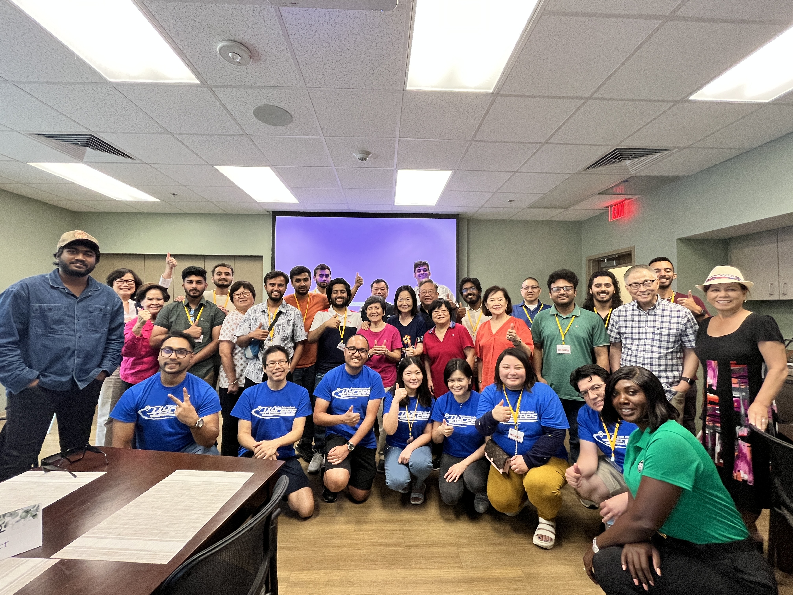
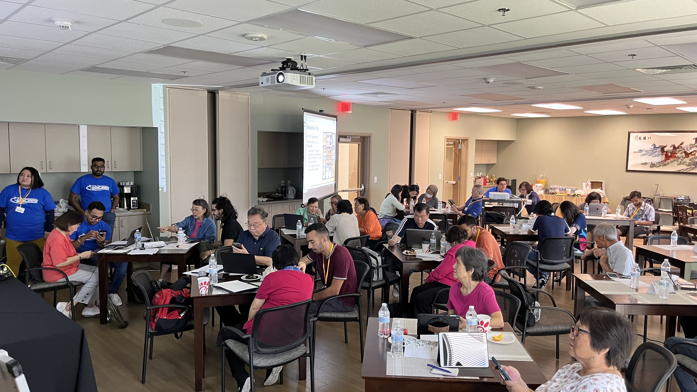
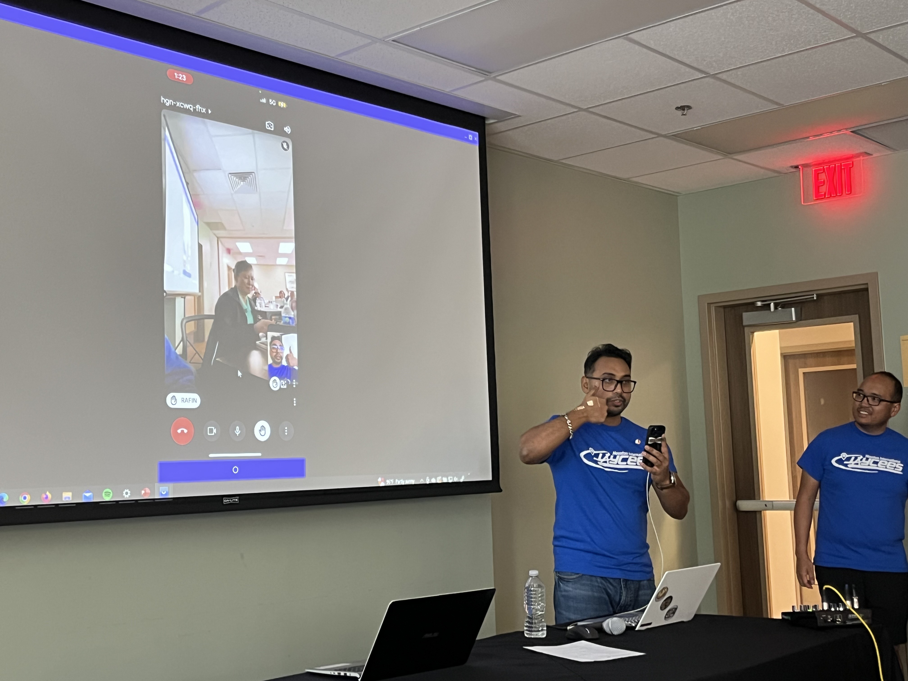
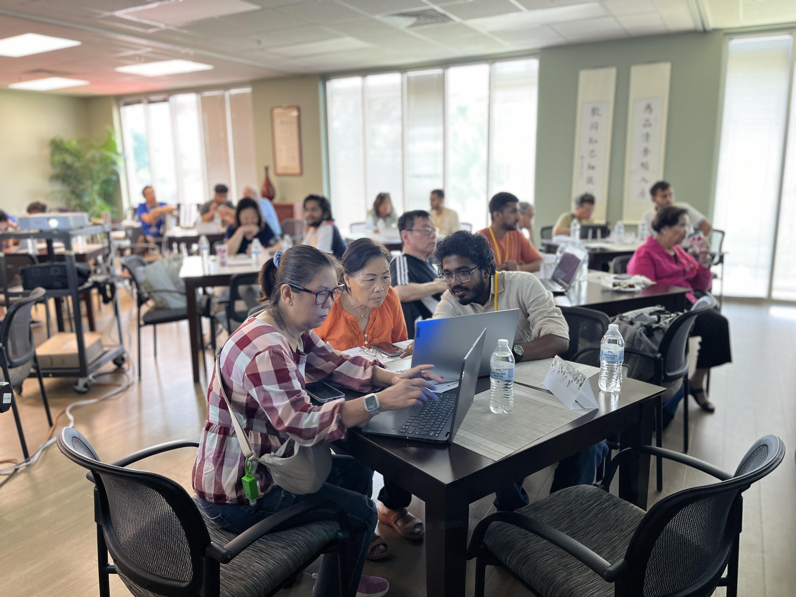
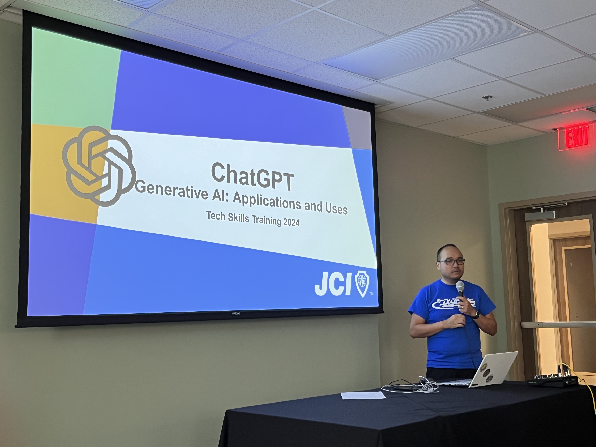
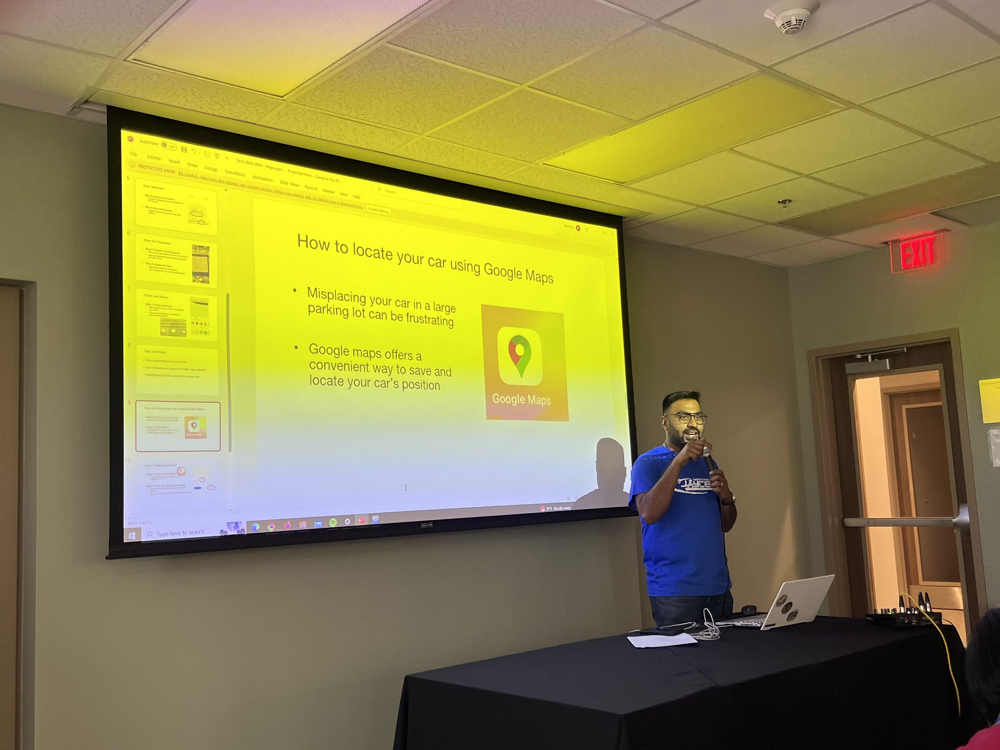

Empowering Seniors with Technology
Volunteer Activity – 2024

In 2024, as the Vice President of Houston International Jaycees, I led a dedicated 12-member volunteer team at the Chinese Community Center in Houston to train 32 senior citizens aged 60+ in essential digital skills.
We provided hands-on guidance and presentations on:
- Using Google Maps for directions and navigation
- Understanding and accessing ChatGPT
- Detecting AI-generated images and fake online posts
- Using Zoom for video calls
Our training emphasized patience, empathy, and clear communication. The joy on their faces when they successfully joined a Zoom call or asked ChatGPT a question was priceless.






This experience reaffirmed my commitment to community service through technology and human connection. I'm proud to have contributed to bridging the digital divide for our elderly neighbors.